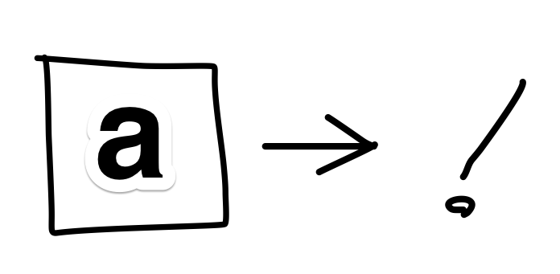
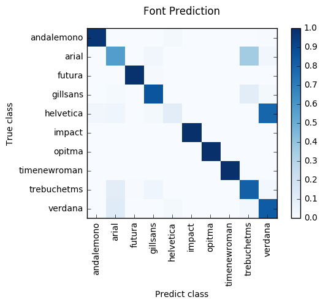

文字画像からフォントを推定する
文字画像からフォントを推定したい
吊り広告や看板に使われているフォントどういうフォントなのか気になるときがある。 そんなとき画像から使用されているフォントを推定してくれる Web サービスやシステムはいくつかある。 それらがどういうロジックでフォントを推定しているのかは分からないが、なんとなく作りたくなったので自作してみることにする。
今回は手始めに 10 種類のフォントを用いて、画像の中に写った文字を見てフォントを推定する仕組みを畳み込みニューラルネットワークを用いて作成してみる。

概要
- 入力は文字が書かれた画像データ
- 画像サイズは 64x64
- 画像中には 1 文字だけ描画
- 出力は推定した文字のフォント
- ただし 推定は以下 10 個のフォントの中から行う
- futura, gillsans, helvetica, opitma, andalemono, arial, impact, timenewroman, trebuchetms, verdana
学習データの準備
なにはともあれとりあえず学習データを用意する。 今回は学習データとして文字画像とその正解ラベルがあればいいので指定のフォントで文字が描画された画像を大量に用意する。
その際 ImageMagick を用いるとだいぶ楽ができる。
ImageMagick で画像を一括生成
ImageMagick で指定フォントの文字画像を出力するには font と label オプションを最低限指定してやれば良い
-fontにはフォントを指定labelには描画したい文字を指定
あと出力される画像の見栄えの調節用オプションとして background, fill, size, gravity 等がある。
詳しくは ImageMagick v6 Examples –
Text to Image Handling を参照のこと。
$ convert -background white -fill black -size 64x64 -gravity center -font [font] label:[label] [output]
例えば、フォントは Futura で a という文字が描画された画像を futura-a.png として出力場合は以下のような感じにオプションをしていしてやれば良い。
$ convert -background white -fill black -size 64x64 -gravity center -font /Library/Fonts/Futura.ttc label:a futura-a.png
以下、a-z の画像を出力した例
いろいろなフォントで a-z の画像を出力する
シェル芸で 10 種類分のフォント画像を準備する。
その際、フォント一覧とフォントファイルの場所を記述した fonts.txt と、描画する文字データを記述した data.txt を用いた。
join で fonts.txt と data.txt をクロスジョインして awk で convert コマンドに文字列整形して sh で実行しています。
$ join -j `cat fonts.txt | wc -l` -t, fonts.txt data.txt | awk -F, '{print "convert -background white -fill black -size 64x64 -gravity center -font \"" $3 "\" label:" $4 " train/" $2 "/" $4 ".png"}' | sh
一応実際に使用した fonts.txt と data.txt を載せておきます。
fonts.txt
futura,/Library/Fonts/Futura.ttc
gillsans,/Library/Fonts/GillSans.ttc
helvetica,/System/Library/Fonts/HelveticaNeueDeskInterface.ttc
opitma,/System/Library/Fonts/Optima.ttc
andalemono,/Library/Fonts/Andale Mono.ttf
arial,/Library/Fonts/Arial.ttf
impact,/Library/Fonts/Impact.ttf
timenewroman,/Library/Fonts/Times New Roman.ttf
trebuchetms,/Library/Fonts/Trebuchet MS.ttf
verdana,/Library/Fonts/Verdana.ttf
data.txt
a
b
c
d
e
f
g
h
i
j
k
l
m
n
o
p
q
r
s
t
u
v
w
x
y
z
.
|-- train
| |-- andalemono
| |-- arial
| |-- futura
| |-- gillsans
| |-- helvetica
| |-- impact
| |-- opitma
| |-- timenewroman
| |-- trebuchetms
| `-- verdana
`-- validation
|-- andalemono
|-- arial
|-- futura
|-- gillsans
|-- helvetica
|-- impact
|-- opitma
|-- timenewroman
|-- trebuchetms
`-- verdana
学習データのかさ増し
def rotate(src):
rows,cols = src.shape
r = random.uniform(0, 360)
M = cv2.getRotationMatrix2D((cols/2,rows/2), r, 1)
return cv2.warpAffine(src, M, (rows, cols), flags=cv2.INTER_LINEAR)
def move(src):
rows,cols = src.shape
dx = random.uniform(0, 5)
dy = random.uniform(0, 5)
M = np.float32([[1, 0, dx],[0, 1, dy]])
return cv2.warpAffine(src,M,(cols,rows))
def make(imgs, pathToDataset, pathToDatasetSaved, n=100):
for img in imgs:
if img.find(".png") > -1 :
src = cv2.imread(pathToDataset + img, 0)
src = cv2.resize(src, (imgSize, imgSize))
src = cv2.bitwise_not(src)
prefix = img.split(".")[0]
for x in xrange(1, n):
dst = move(rotate(move(rotate(src))))
cv2.imwrite(pathToDatasetSaved + prefix + "-" + "{0:04d}".format(x) + ".png", dst)
ImagerDataGenherator 作成
img_width, img_height = 64, 64
train_data_dir = "../datasets/data/train"
validation_data_dir = "../datasets/data/validation"
datagen = ImageDataGenerator(rescale=1./255)
train_generator = datagen.flow_from_directory(
train_data_dir,
target_size=(img_width, img_height),
batch_size=64,
color_mode="grayscale",
class_mode="categorical")
validation_generator = datagen.flow_from_directory(
validation_data_dir,
target_size=(img_width, img_height),
batch_size=64,
color_mode="grayscale",
class_mode="categorical")
学習モデル作成
model = Sequential()
model.add(Convolution2D(32, 3, 3, input_shape=(img_width, img_height, 1)))
model.add(Activation('relu'))
model.add(MaxPooling2D(pool_size=(2, 2)))
model.add(Convolution2D(32, 3, 3))
model.add(Activation('relu'))
model.add(MaxPooling2D(pool_size=(2, 2)))
model.add(Convolution2D(64, 3, 3))
model.add(Activation('relu'))
model.add(MaxPooling2D(pool_size=(2, 2)))
model.add(Flatten())
model.add(Dense(64))
model.add(Activation('relu'))
model.add(Dropout(0.5))
model.add(Dense(10))
model.add(Activation('sigmoid'))
model.compile(loss='binary_crossentropy',
optimizer='Adam',
metrics=['accuracy'])
学習
# ハイパーパラメタ
nb_epoch = 300
nb_train_samples = 2048
nb_validation_samples = 832
# 学習を行う
# fit_generator() の返り値に学習過程のデータが得られる
history = model.fit_generator(
train_generator,
samples_per_epoch=nb_train_samples,
nb_epoch=nb_epoch,
validation_data=validation_generator,
nb_val_samples=nb_validation_samples)
Epoch 1/300
2048/2048 [==============================] - 13s - loss: 0.4733 - acc: 0.8062 - val_loss: 0.3308 - val_acc: 0.9000
Epoch 2/300
2048/2048 [==============================] - 13s - loss: 0.3765 - acc: 0.8884 - val_loss: 0.3329 - val_acc: 0.9000
Epoch 3/300
2048/2048 [==============================] - 13s - loss: 0.3564 - acc: 0.8953 - val_loss: 0.3154 - val_acc: 0.9000
Epoch 4/300
2048/2048 [==============================] - 13s - loss: 0.3380 - acc: 0.9006 - val_loss: 0.2956 - val_acc: 0.9065
Epoch 5/300
2048/2048 [==============================] - 13s - loss: 0.3192 - acc: 0.9038 - val_loss: 0.2766 - val_acc: 0.9096
Epoch 6/300
2048/2048 [==============================] - 13s - loss: 0.3063 - acc: 0.9046 - val_loss: 0.2622 - val_acc: 0.9115
Epoch 7/300
2048/2048 [==============================] - 11s - loss: 0.2888 - acc: 0.9069 - val_loss: 0.2560 - val_acc: 0.9094
Epoch 8/300
2048/2048 [==============================] - 14s - loss: 0.2742 - acc: 0.9099 - val_loss: 0.2484 - val_acc: 0.9142
...
Epoch 294/300
2048/2048 [==============================] - 13s - loss: 0.0990 - acc: 0.9522 - val_loss: 0.0822 - val_acc: 0.9609
Epoch 295/300
2048/2048 [==============================] - 12s - loss: 0.0921 - acc: 0.9552 - val_loss: 0.0736 - val_acc: 0.9619
Epoch 296/300
2048/2048 [==============================] - 12s - loss: 0.0890 - acc: 0.9564 - val_loss: 0.0707 - val_acc: 0.9650
Epoch 297/300
2048/2048 [==============================] - 13s - loss: 0.0954 - acc: 0.9535 - val_loss: 0.0735 - val_acc: 0.9612
Epoch 298/300
2048/2048 [==============================] - 14s - loss: 0.0904 - acc: 0.9543 - val_loss: 0.0699 - val_acc: 0.9643
Epoch 299/300
2048/2048 [==============================] - 13s - loss: 0.0869 - acc: 0.9557 - val_loss: 0.0710 - val_acc: 0.9632
Epoch 300/300
2048/2048 [==============================] - 13s - loss: 0.0913 - acc: 0.9562 - val_loss: 0.0725 - val_acc: 0.9619
print model.evaluate_generator(validation_generator, nb_validation_samples)
# [0.068484609230206564, 0.9645432738157419]
# loss と accuracy の値が得られる
# モデルを保存する
model.save_weights('e300.h5')
実験
# 推定処理
from keras.preprocessing import image
fonts = ["andalemono", "arial", "futura", "gillsans", "helvetica", "impact", "opitma", "timenewroman", "trebuchetms", "verdana"]
lefts = np.array([0, 1, 2, 3, 4, 5, 6, 7, 8, 9])
# 学習済みの重みをロード
model.load_weights('e300.h5')
model.compile(loss='binary_crossentropy',
optimizer='Adam',
metrics=['accuracy'])
# 適当にデータを読み込ませる
filename = "../datasets/data/validation/andalemono/f-0911.png"
img = image.load_img(filename, target_size=(img_height, img_width), grayscale=True)
x = image.img_to_array(img)
x = np.expand_dims(x, axis=0)
x = x / 255.0
pred = model.predict(x)[0]
plt.subplot(2, 1, 1)
plt.imshow(img)
plt.subplot(2, 1, 2)
plt.barh(lefts, pred, tick_label=fonts, align="center")
def predict(imagepath):
fonts = ["andalemono", "arial", "futura", "gillsans", "helvetica", "impact", "opitma", "timenewroman", "trebuchetms", "verdana"]
img = image.load_img(filename, target_size=(img_height, img_width), grayscale=True)
x = image.img_to_array(img)
x = np.expand_dims(x, axis=0)
x = x / 255.0
pred = model.predict(x)[0]
pred_index = np.argmax(pred)
return pred_index, fonts[pred_index]

まとめ
- ある程度精度は出るっぽいので、対象フォント数を増やしたい
- なぜか Helvetica の認識率だけ悪い
- 実際にスマホアプリとかに埋め込みたい